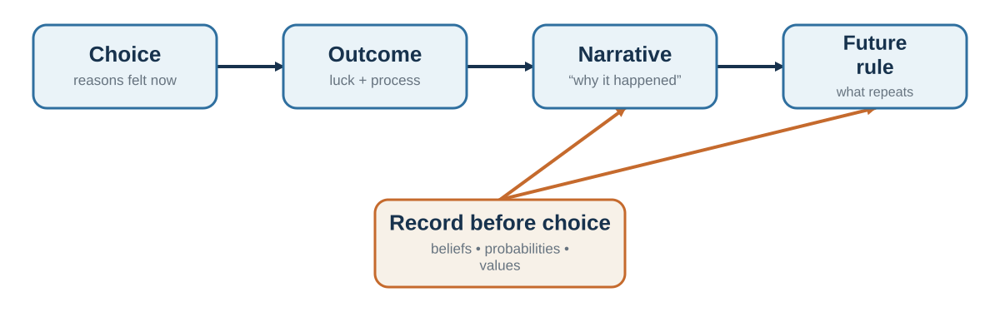

Part 3 · About 7 min read
Chapter 18. The Narrator After the Choice
Why explanations can be sincere and still miss the cause
Learning goals
- Distinguish a reason, a justification, and a cause.
- Explain choice blindness, confabulation, and the interpreter.
- Describe cognitive dissonance and post-choice revaluation.
- Use tests, records, and outsider perspectives to hold stories accountable.
A person chooses the rightmost of four identical products and then explains the choice by texture and quality. A participant selects one face, receives the rejected face after a covert switch, and calmly explains why that was the preferred face. A manager approves an acquisition partly because of status competition, then remembers the decision as a disciplined strategic move. In each case, the explanation may be sincere. Sincerity, however, does not guarantee access to the cause.
Human beings are not only decision-makers. We are narrators. We turn actions into reasons, fragments into continuity, and accidents into stories that can be communicated to other people. This ability is indispensable for identity and coordination. It is also a source of error, because a plausible explanation can feel like direct introspection even when it is partly reconstructed after the fact (Nisbett & Wilson, 1977b).
Reasons are not the same as causes
A reason can play several roles. It can describe what a person consciously considered before choosing. It can justify a choice to an audience. It can express a value the person genuinely endorses. It can also be a post-hoc account assembled from what is available after the action. These roles overlap, which is why the correct conclusion is not that introspection is useless. People often know their goals, deliberations, and conscious reasons. Their access to subtle causal influences - position, order, fluency, mood, priming, habit, social pressure, and automatic evaluation - is incomplete.
People can give sincere explanations for choices without having reliable introspective access to the processes that produced them (Nisbett & Wilson, 1977b; Johansson et al., 2005).
Nisbett and Wilson (1977b) reviewed evidence that people sometimes report culturally plausible theories of why they responded rather than direct knowledge of the process. In the well-known stocking display, identical items were arranged from left to right. The rightmost item was chosen more frequently, yet participants explained their preferences in terms of fabric and workmanship and rejected position as a cause. The study does not show that every reason is false. It shows that unnoticed influences can shape behavior while the mind produces a coherent account.
Choice blindness and the confidence of explanation
Choice-blindness experiments make the gap more visible. Johansson et al. (2005) asked participants to choose between faces. Through a card trick, some participants were then shown the face they had rejected and asked to explain their choice. Many failed to detect the switch and offered detailed reasons for preferring the substituted option. Later work extended the paradigm to consumer choices and moral or political attitudes, while also showing that detection depends on the task and size of the manipulation (Hall et al., 2012).
The striking feature is not merely error. It is fluent justification. Once an option is represented as "my choice," the mind can search memory and construct reasons consistent with it. This is useful for commitment and social communication, but dangerous when confidence in the explanation is mistaken for evidence about the original cause.
The interpreter and confabulation
Research with split-brain patients inspired the idea of an interpreter: a tendency, especially associated with the language-dominant hemisphere, to construct a coherent account of behavior from whatever information is available (Gazzaniga, 2000). In classic demonstrations, an action could be initiated by information unavailable to the speaking hemisphere. When asked why the action occurred, the person produced an immediate explanation rather than reporting ignorance.
These cases are neurologically unusual, and they should not be treated as a complete theory of ordinary self-knowledge. Their value is conceptual. The mind strongly prefers an intelligible story to an acknowledged gap. Confabulation in this sense need not involve deliberate deception. It is the filling of an explanatory gap with a story that feels subjectively real.
Cognitive dissonance: the choice rewrites the chooser
After a difficult choice between attractive alternatives, people often increase the attractiveness of the chosen option and decrease the attractiveness of the rejected one. Brehm (1956) interpreted this spreading of alternatives as a response to post-decision dissonance. A choice creates inconsistency: if the rejected option was genuinely attractive, why did I reject it? Revaluation restores coherence.
Dissonance reduction can support commitment. Constantly reopening every decision would be exhausting. But it can also make feedback harder to hear. A team that invested heavily in a project may reinterpret weak demand as temporary misunderstanding. A person who chose a prestigious job may minimize the daily costs that were obvious before the decision. A negotiator who rejected an offer may later describe it as insulting even when it was close to acceptable.
Reasoning as a social instrument
Reasoning is not used only to discover truth privately. It is also used to justify actions, persuade others, defend group commitments, and protect moral identity. Motivated reasoning occurs when people search and evaluate arguments in ways that favor a preferred conclusion while preserving the feeling of objectivity (Kunda, 1990). Greater cognitive skill can improve accuracy, but it can also provide a larger toolkit for defending identity-protective beliefs.
Moral rationalization is especially consequential. People can reframe questionable conduct as efficiency, loyalty, standard practice, competitive necessity, or obedience to procedure. Ethical fading occurs when the moral dimension disappears from the frame. Euphemistic language does not merely describe the action; it changes what is attended to and what can be justified (Bandura, 1999).
Organizations have narrators too
Organizations create stories about why strategies succeeded, why projects failed, who deserves credit, and what the culture values. These stories organize memory and coordinate action. They can also protect leaders, suppress inconvenient evidence, and turn luck into a legend of skill. A postmortem that begins with "who failed?" produces a different institutional memory from one that asks "what assumptions, incentives, information flows, and constraints made this outcome likely?"
The central risk is that an explanation becomes immune to testing. "Customers were not ready" may hide a poor product. "The team resisted change" may hide an incoherent implementation. "We work best under pressure" may hide procrastination reinforced by last-minute relief.
Making the narrator accountable

A decision journal creates a record before outcome knowledge rewrites memory. Record the alternatives, assumptions, forecasts, values, emotions, reasons, and review date. Later, compare the original story with what happened. The aim is not self-accusation. It is causal humility.
Other useful practices include generating alternative explanations, asking what evidence would disconfirm the preferred story, inviting an outsider who does not need the story to be true, and running bounded experiments. If the story says employees cannot handle autonomy, test a limited autonomy arrangement. If it says customers will never want the product, build a small prototype. Testing is better than defending.
Self-affirmation can sometimes reduce defensiveness by reminding people that the whole self is not on trial (Cohen & Sherman, 2014; Steele, 1988). Organizations can also reward revision. A person who says, "My forecast was wrong and here is what changed," should be treated as a source of learning rather than as a threat to authority. The narrator is not an enemy. It is a press secretary, historian, lawyer, poet, and diplomat. Better judgment begins when we ask it one more question: How do I know this story is true?
Key ideas
- The mind often turns a choice into a coherent story after the action. Explanations can express genuine values and still be incomplete causal accounts.
- Distinguish a reason, a justification, and a cause.
- Explain choice blindness, confabulation, and the interpreter.
- Describe cognitive dissonance and post-choice revaluation.
Study and practice
-
How would you distinguish a reason, a justification, and a cause?
-
How would you explain choice blindness, confabulation, and the interpreter?
-
What evidence and mechanism would you use to describe cognitive dissonance and post-choice revaluation?